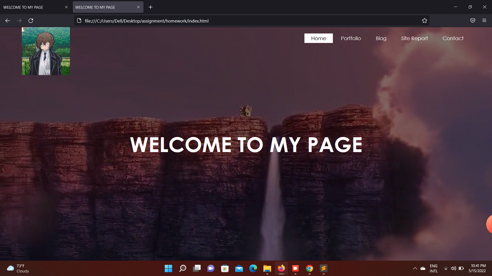

15 May
Experience:
Trough out the first semester it was a very good experience for me in learning about many new things about computers and the world inside it. I will really like to thank my teacher Mr.Ankit Sir for helping me in learning about the web development and creating new websites and also i would like to thank all my techers too. Ankit sir has just taught us about creating a WEB SITE which was not easy at all but at the end of the day we gave our best in creating it as much as we can. So i will say it was a bit hard but practice made me perfect and now i guess i have done a very good job and i will really love to say that the experience of creating this web site was a very good and helpful journey.
Reflective Discussion:
Now talking about the Websit that i created, it has all the information asked by the teacher and provides good information about the page and the use of it. Discussing about how i created this web site, i took help by my techers and my friends on how to give a new start to create a website and they all helped me in teaching it and do helped me in learing it too. I was very gratefull for having them cause wgile discussing about it i get know many things about the coding and about git-hub. I do learned how to import images and create grid columns and add movements like hover, etc. This discussion on my experience about creating a Website was preety good and was hard and was a head-ache too but at the end of the day i was satisfied with my work for which i almost took about 2 weeks.
Site Development:
At the end when i finally created my website i saw a huge devlopment of my page from the begining to the end of the day when it was finally completed. The page was full of background images and the informations that it wanted. I even added some logos and hover effect to make it more eye-catching and attractive. Now looking at my site i guess it will well developed and completed in a very well manner. And all the credit goes to the teachers and the staffs who helped the students in learning about these amazing tasks and assignments which not only helps in getting a good grade but do helps us in learning more and more about it.
